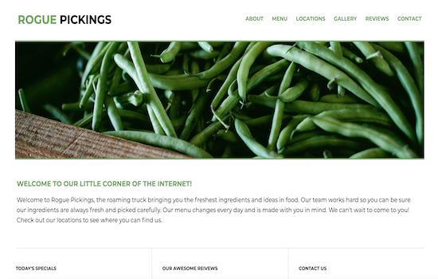
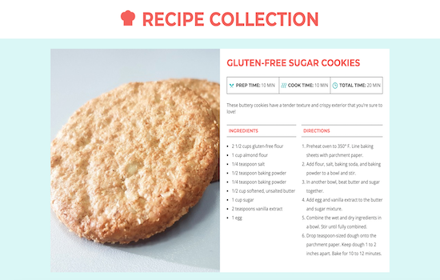

Jubilee Austen Portfolio HTML, CSS, Adobe Photoshop, Visual Studio Code
Using HTML and CSS, I created a static portfolio
website. This was a project I completed through Skillcrush, an online
coding program. I used a Photoshop design comp to extract font styles,
colors and measurements to replicate the design in CSS, while using HTML
to structure the content. I wrote all of the code in Visual Studio Code.

Rogue Pickings Website HTML, CSS, Adobe Photoshop, Visual Studio Code
This is another Skillcrush project where I used Visual
Studio Code and a Photoshop design comp to create a website for a restaurant.
It included an About & Contact section, Menu, Customer Reviews and a link to
its location on Google Maps. This project focused heavily on structuring navigation
bars and links in HTML and styling them in CSS, which I was able to master.

Recipe Card Project HTML, CSS, Visual Studio Code
In this Skillcrush project, I used CSS to style the provided
HTML content in Visual Studio Code. There was no design comp, so I estimated the
measurements by hand and was given a style guide to refer back to with the required
fonts and colors. The main goal was to learn and practice additional complex CSS
styles to create a clean layout.